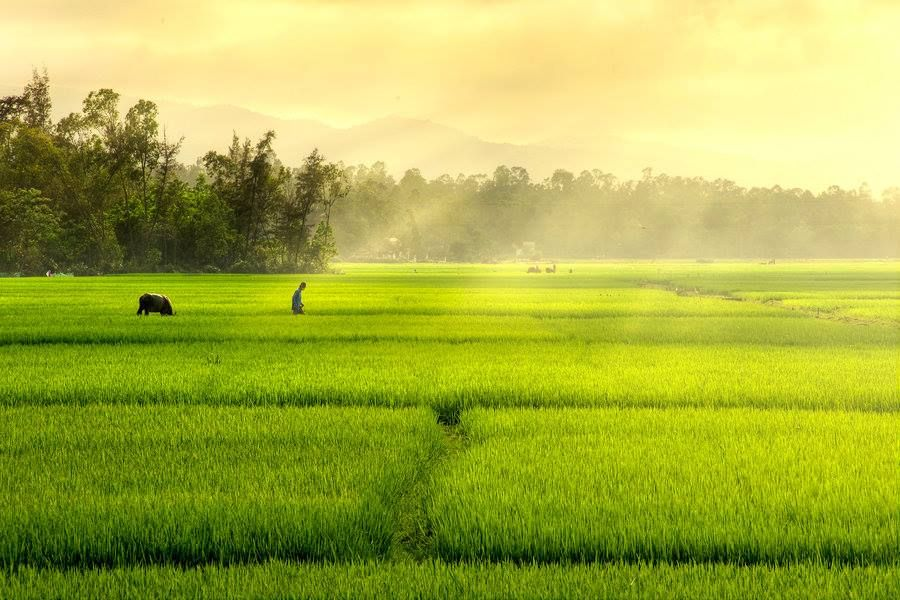
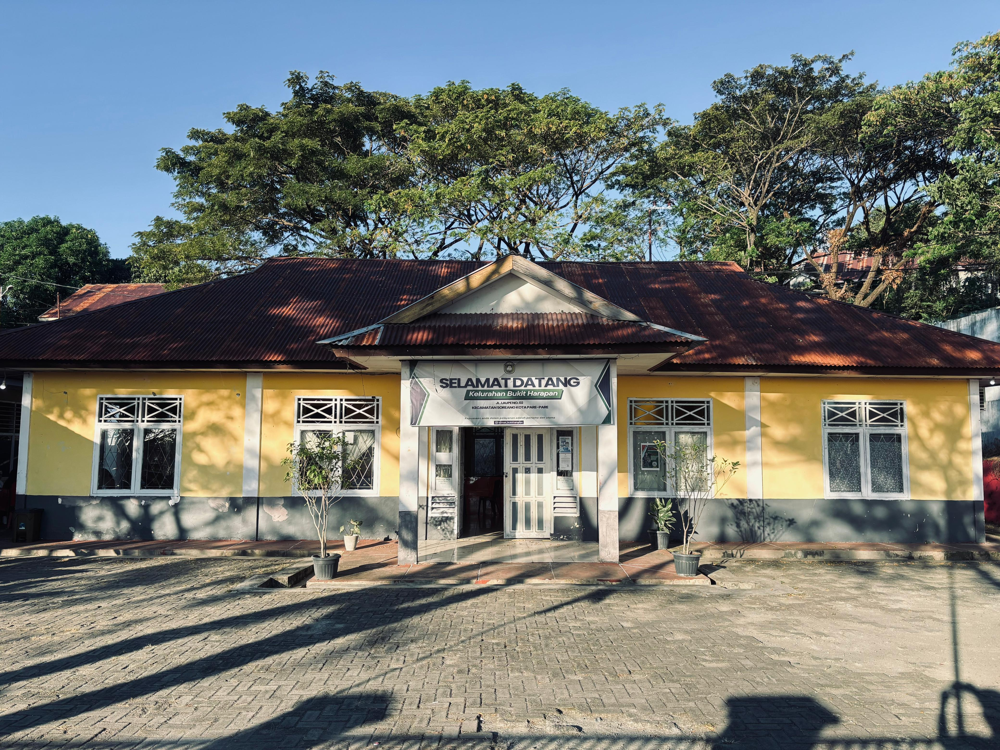
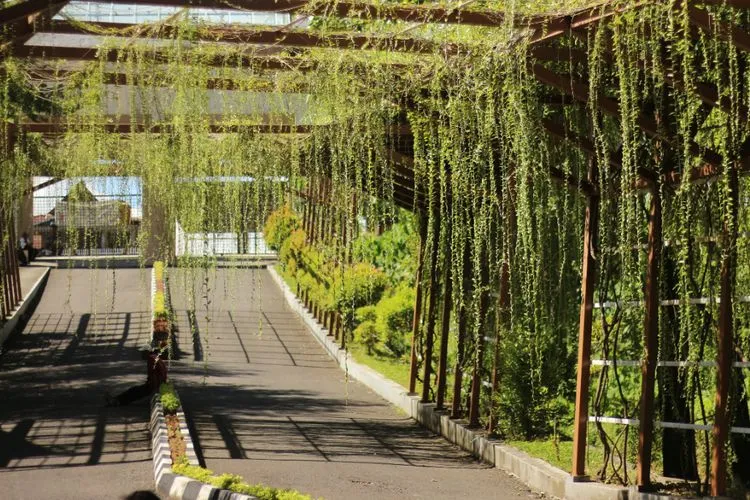
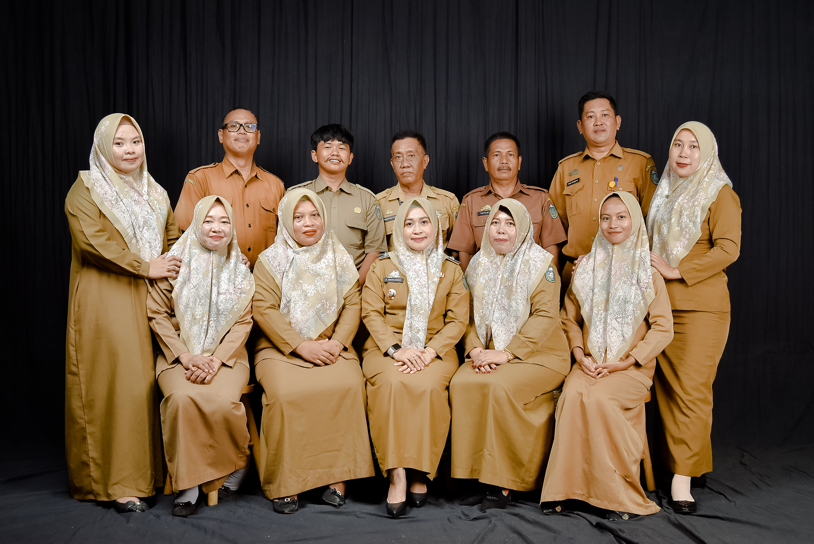
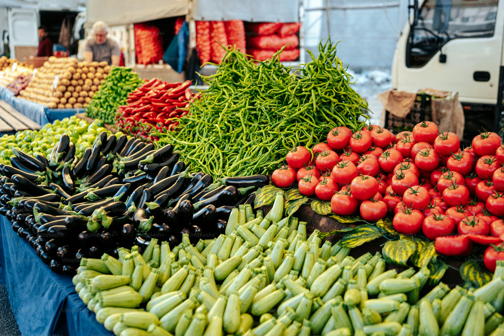

Bukit Harapan
Kota Parepare
Selamat Datang,
Di Website Profil
Bukit Harapan


Kota Parepare
Kelurahan Bukit Harapan merupakan salah satu kelurahan yang berada di wilayah administratif Kecamatan Soreang, Kota Parepare, Provinsi Sulawesi Selatan. Nama Bukit Harapan melambangkan cita-cita dan optimisme masyarakat untuk terus berkembang, membangun kehidupan yang lebih baik, dan menjadikan wilayah ini sebagai tempat yang nyaman dan sejahtera bagi seluruh warganya.
Kelurahan Bukit Harapan memiliki wilayah dengan luas sebesar 5.56 KM/ 556 Ha dan berbatasan dengan Kelurahan Lapadde (utara), Kampung Baru (selatan), Bumi Harapan (timur), dan Lakessi (barat). Letaknya yang strategis menjadikannya salah satu pusat pertumbuhan sosial dan ekonomi di Kecamatan Soreang.
Kelurahan Bukit Harapan terdiri dari 9 RW dan 27 RT yang memudahkan koordinasi pemerintahan dan mendorong partisipasi warga dalam pembangunan. Fasilitas umum cukup memadai, meliputi pendidikan dari PAUD hingga SMA, tempat ibadah seperti masjid dan musholla, serta layanan kesehatan seperti Posyandu, Puskesmas Pembantu, dan Poskeskel.

Keluarahan Bukit Harpan, Kecamatan Soreang, Parepare

Sebelum tahun 1992 Kelurahan Bukit Harapan adalah bagian dari Kelurahan Wattang Soreang. Pada tahun 1992 Kelurahan Wattang Soreang dimekarkan menjadi 3 kelurahan yaitu, Kelurahan Wattang Soreang, Persiapan Bukit Harapan, Persiapan Bukit Indah.
Pada tahun 1995 Kelurahan Persiapan Bukit Harapan definitve menjadi Kekurahan Bukit Harapan Kecamatan Soreang, Kota Parepare.
Kecamatan Soreang merupakan salah satu kecamatan yang berada diwilayah kota Parepare, dimana kecamatan Soreang dibatasi oleh Kab. Sidrap pada bagian Utara, Kec. Ujung pada bagian selatan, Kab. Pinrang pada bagian Barat, dan Kec. Ujung pada bagian Timur. Dengan luas wilayah 8,33 km2 yang memiliki 7 kelurahan salah satunya adalah Kelurahan Bukit Harapan
Kelurahan Bukit Harapan merupakan sebuah kelurahan yang bertempat di Kecamatan Soreang Daerah Kota Parepare, memiliki wilayah dengan Luas sebesar 5.56 KM/556 Ha. Kelurahan ini terdiri dari 9 ORW dan 27 ORT
Peta Lokasi Kelurahan Bukit Harapan
Batas Kelurahan
Utara
Kabupaten Pinrang dan Kabupaten Sidrap
Timur
Kelurahan Lapadde Kecamatan Ujung
Selatan
Kelurahan Bukit Indah
Barat
Kelurahan Wattang Soreang
Garis Lintang
3°98′90,60″ LS
Garis Bujur
119°64′87,31" BT
Luas Desa
5.560.000 m²
Jumlah Penduduk
3.107 Jiwa
Lokasi Kelurahan Bukit Harapan, Kecamatan Soreang, Parepare
12.628
Jumlah Penduduk
5,56 Km2
Luas Kelurahan
3.814
Kepala Keluarga
27
RT
9
RW

Kelurahan Bukit Harapan memiliki struktur organisasi yang tertata mulai dari Lurah hingga Ketua RT/RW di setiap lingkungan. Disertai dengan visi dan misi

Informasi penting mengenai Kelurahan Bukit Harapan seperti data kependudukan, fasilitas umum, dan sebaran infrastruktur ditampilkan secara visual melalui infografis yang mudah dipahami.

UMKM di Kelurahan Bukit Harapan menjadi pilar penting dalam menggerakkan roda ekonomi masyarakat. Terdapat berbagai jenis usaha mikro dan kecil yang dikelola oleh warga, mulai dari kuliner, kerajinan tangan, hingga jasa lokal yang menunjang kemandirian ekonomi warga.

Potensi desa seperti sumber daya alam dan potensi alam yang bisa dikembangkan.Kelurahan Bukit Harapan memiliki beragam potensi, baik dari sumber daya alam seperti lahan pertanian dan kehutanan, maupun potensi wisata dan budaya lokal.